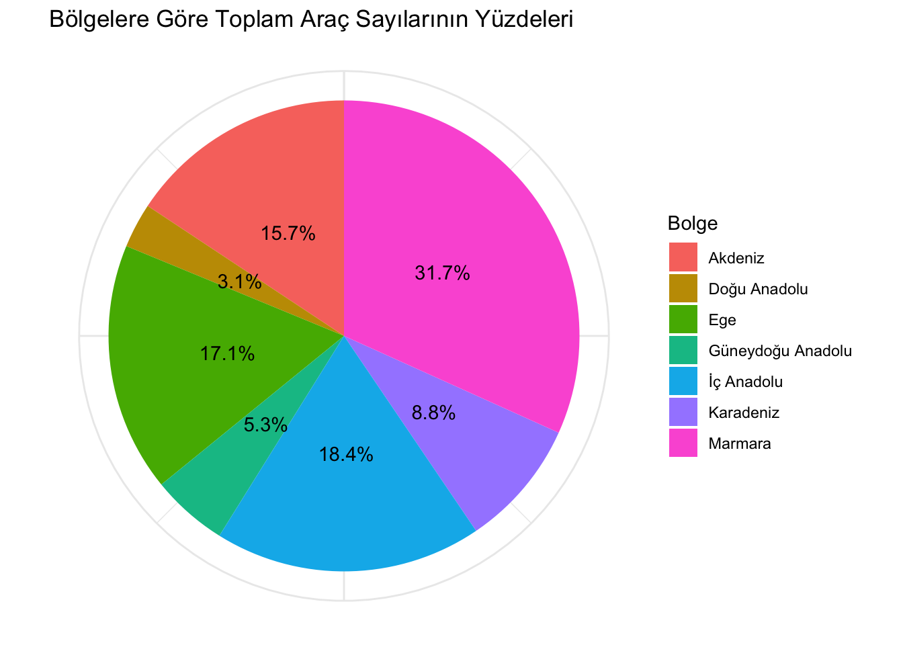

library(readr)
library(readxl)
library(dslabs)
library(tidyverse)── Attaching core tidyverse packages ──────────────────────── tidyverse 2.0.0 ──
✔ dplyr 1.1.4 ✔ purrr 1.0.2
✔ forcats 1.0.0 ✔ stringr 1.5.1
✔ ggplot2 3.5.0 ✔ tibble 3.2.1
✔ lubridate 1.9.3 ✔ tidyr 1.3.1
── Conflicts ────────────────────────────────────────── tidyverse_conflicts() ──
✖ dplyr::filter() masks stats::filter()
✖ dplyr::lag() masks stats::lag()
ℹ Use the conflicted package (<http://conflicted.r-lib.org/>) to force all conflicts to become errorslibrary(dplyr)
library(ggthemes)
#Excel dosyasını oku
veri <- read_excel("/Users/ozgurkaya/Documents/GitHub/muy665-bahar2024-takim-ancuez/dataset/illere göre araç sayısı.xls")
#İlleri bölgelere göre ayırma
bolgeler <- list(
"Marmara" = c("İstanbul", "Kırklareli", "Bursa", "Edirne", "Kocaeli", "Sakarya", "Tekirdağ", "Balıkesir", "Çanakkale", "Yalova", "Bilecik"),
"Ege" = c("İzmir", "Aydın", "Muğla", "Manisa", "Denizli", "Afyonkarahisar", "Kütahya", "Uşak"),
"Akdeniz" = c("Antalya", "Mersin", "Adana", "Isparta", "Burdur", "Hatay", "Osmaniye", "Kahramanmaraş"),
"İçAnadolu" = c("Ankara", "Konya", "Eskişehir", "Kayseri", "Sivas", "Yozgat", "Kırıkkale", "Kırşehir", "Niğde", "Aksaray", "Karaman", "Nevşehir", "Çankırı"),
"Karadeniz" = c("Trabzon", "Bayburt", "Samsun", "Ordu", "Gümüşhane", "Giresun", "Rize", "Artvin", "Sinop", "Kastamonu", "Çorum", "Amasya", "Tokat", "Zonguldak", "Bartın", "Karabük", "Bolu", "Düzce"),
"DoğuAnadolu" = c("Malatya", "Elazığ", "Erzincan", "Erzurum", "Van", "Ağrı", "Muş", "Bingöl", "Bitlis", "Tunceli", "Hakkari", "Iğdır", "Kars", "Ardahan"),
"GüneydoğuAnadolu" = c("Gaziantep", "Diyarbakır", "Şanlıurfa", "Mardin", "Batman", "Şırnak", "Siirt", "Adıyaman", "Kilis")
)
# Her bölgedeki illeri filtreleyip değişkenlere atama
marmara <- veri %>% filter(İl %in% bolgeler$Marmara)
ege <- veri %>% filter(İl %in% bolgeler$Ege)
akdeniz <- veri %>% filter(İl %in% bolgeler$Akdeniz)
ic_anadolu <- veri %>% filter(İl %in% bolgeler$İçAnadolu)
karadeniz <- veri %>% filter(İl %in% bolgeler$Karadeniz)
dogu_anadolu <- veri %>% filter(İl %in% bolgeler$DoğuAnadolu)
guneydogu_anadolu <- veri %>% filter(İl %in% bolgeler$GüneydoğuAnadolu)
# Bölgelere göre toplam araç sayılarını hesaplama
bolge_toplamlari <- veri %>%
mutate(Bolge = case_when(
İl %in% bolgeler$Marmara ~ "Marmara",
İl %in% bolgeler$Ege ~ "Ege",
İl %in% bolgeler$Akdeniz ~ "Akdeniz",
İl %in% bolgeler$`İçAnadolu` ~ "İç Anadolu",
İl %in% bolgeler$Karadeniz ~ "Karadeniz",
İl %in% bolgeler$`DoğuAnadolu` ~ "Doğu Anadolu",
İl %in% bolgeler$`GüneydoğuAnadolu` ~ "Güneydoğu Anadolu",
TRUE ~ "Diğer"
)) %>%
group_by(Bolge) %>%
summarise(Total_Arac_Sayisi = sum(Toplam, na.rm = TRUE))
# Yüzdeleri hesaplama
bolge_toplamlari <- bolge_toplamlari %>%
mutate(Yuzde = Total_Arac_Sayisi / sum(Total_Arac_Sayisi) * 100)
# Bölgelere Göre Toplam Araç Sayılarının Pasta Grafiğini Oluşturma
ggplot(bolge_toplamlari, aes(x = "", y = Yuzde, fill = Bolge)) +
geom_bar(width = 1, stat = "identity") +
coord_polar("y") +
labs(title = "Bölgelere Göre Toplam Araç Sayılarının Yüzdeleri", x=NULL, y=NULL) +
theme_minimal() +
theme(axis.text.x = element_blank()) +
geom_text(aes(label = paste0(round(Yuzde, 1), "%")), position = position_stack(vjust = 0.5))